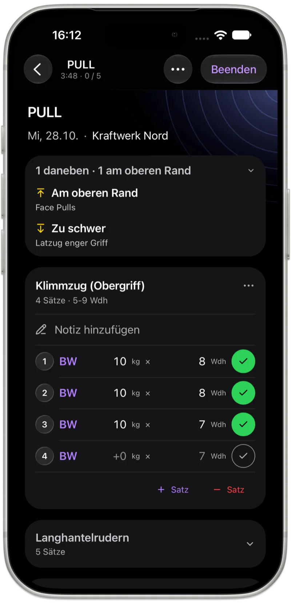
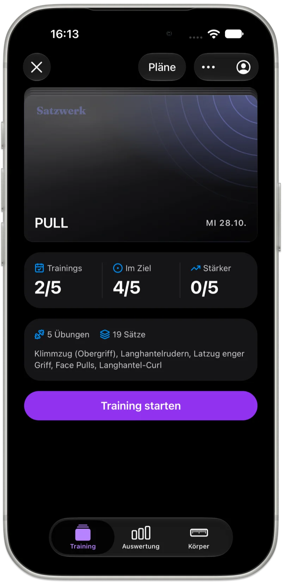
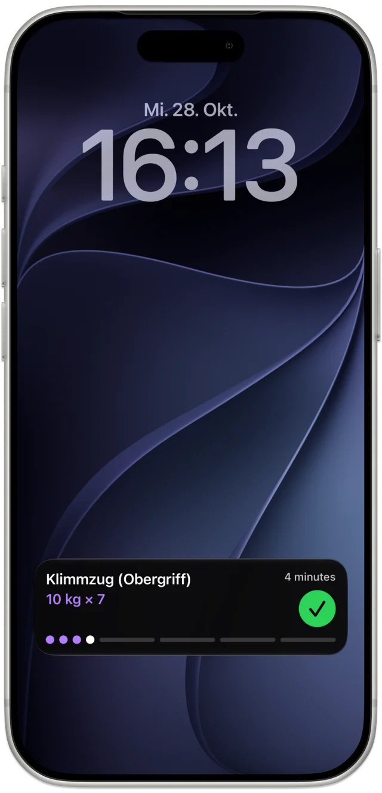
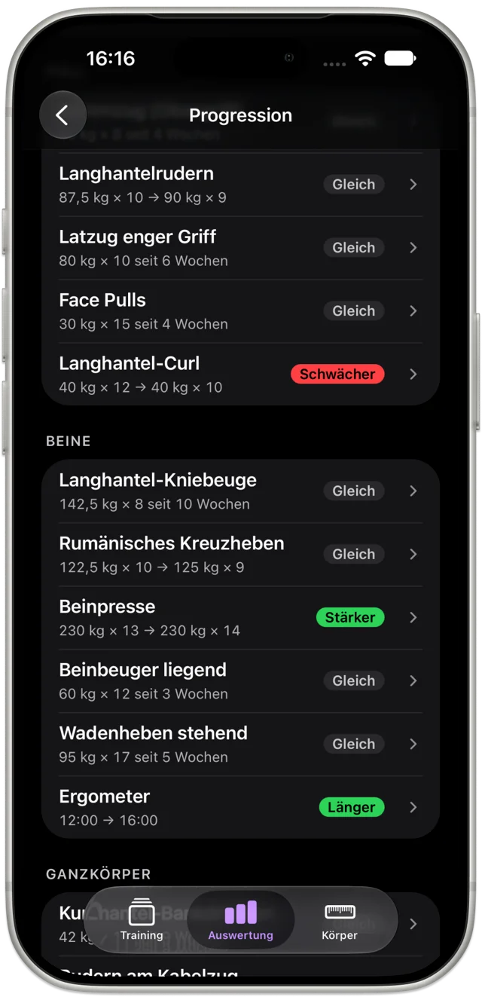
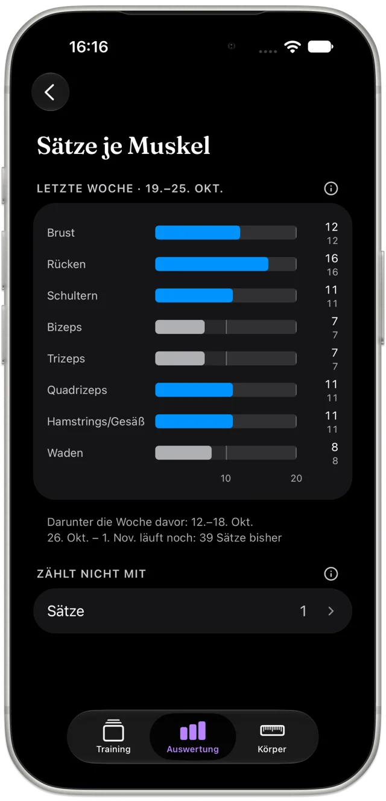
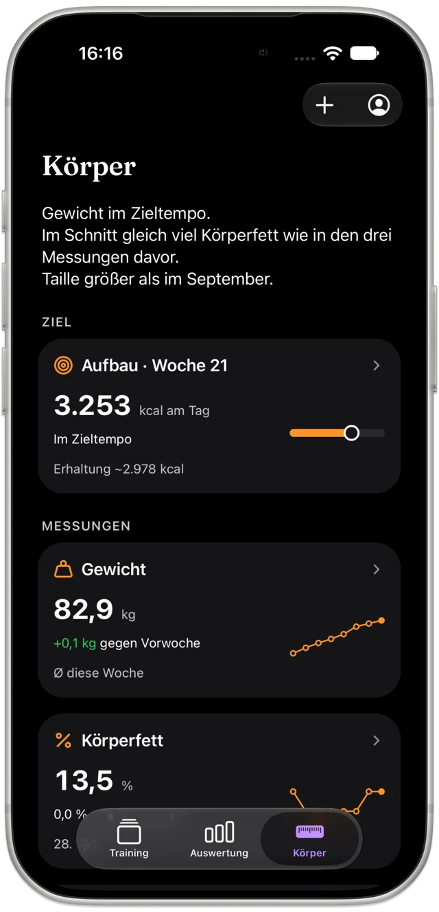
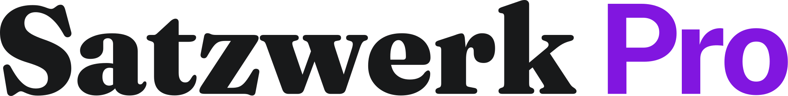

Sieh, ob du stärker wirst.
Satzwerk hält jeden Satz fest und wertet jede Übung aus. Dazu Gewicht, Körperfett und Umfänge.
Für iPhone. Keine Werbung, kein Konto nötig, deine Daten liegen auf deinem iPhone und, wenn du willst, in deiner eigenen iCloud.


Erfassen und auswerten

Eintragen, ohne den Satz zu unterbrechen
Gewicht und Wiederholungen tippen, abhaken, weiter. Was du letztes Mal gemacht hast, steht grau schon im Feld. Am Sperrbildschirm steht die nächste Übung mit Gewicht und Wiederholungen.

Progression je Übung
Je Übung ein Urteil: stärker, gleich oder schwächer, ab der zweiten Trainingswoche. Dazu, ob deine Wiederholungen im Ziel liegen: im Ziel, am oberen Rand, zu leicht oder zu schwer.

Sätze je Muskelgruppe
Arbeitssätze je Muskelgruppe und Woche, die Vorwoche daneben. Aufwärmsätze zählen nie mit. Der Bereich von 10 bis 20 Sätzen je Woche steht als Linie dabei.

Körper und Ziel
Das Gewicht als Wochenschnitt mit gemessenem Tempo ist frei. Mit Pro kommen dein Ziel je Phase, Kalorien am Tag, Körperfett aus Hautfalten und Umfänge dazu.
Befunde, keine Anweisungen.
Satzwerk zeigt, wo du stehst. Es sagt dir nicht, was du tun sollst. Keine Handlungsempfehlungen, keine Gewichtsvorgabe, kein Urteil über eine Entlastungswoche. Ein Onboarding kennt deinen Bandscheibenvorfall nicht, deinen Blutdruck nicht und dein Sprunggelenk nicht. Ein persönlicher Plan kommt von Menschen, die dich kennen. Die Zahlen kommen von hier.
Was drin ist
Frei
- Eigene Pläne, unbegrenzt, dazu zwölf Vorlagen
- Deine Woche als Kartenstapel, zwei Kartendesigns
- 223 Übungen, eigene frei anlegbar
- Die Werte vom letzten Mal grau im Feld
- Live Activity am Sperrbildschirm
- Training teilen als Story oder Sticker
- Vier Widgets für den Home-Bildschirm
- Archiv und Wochenraster
- Gewicht eintragen, Verlauf mit gemessenem Tempo
- Sicherung in iCloud und als Datei, Wiederherstellen und CSV-Export
- Apple Health: Training, Gewicht und Körperfett schreiben, Gewicht lesen
- Deutsch und Englisch, metrisch und imperial
- Hell, dunkel oder automatisch
Pro
- Progression je Übung: stärker, gleich oder schwächer, dazu das Wiederholungsziel
- Arbeitssätze je Muskelgruppe, Woche gegen Vorwoche
- Intensität: RIR nach dem letzten Satz und Anteil harter Sätze
- Mehrere Studios, Werte je Studio getrennt
- Ziel je Phase: Zielgewicht und Ziel-Körperfett
- Kalorien am Tag, geplantes gegen gemessenes Tempo
- Körperfett aus Hautfalten oder Waage eintragen
- Umfänge eintragen und auswerten, die Taille mit eigener Kurve
- Fett und fettfreie Masse getrennt
- Verläufe seit Phasenbeginn
- Alle sieben Kartendesigns
- „Im Ziel“ und „Stärker“ auf der Karte, die Progression im geteilten Bild
Kein Feed, keine Tonnage, kein Essensprotokoll.

Die Auswertung deiner Daten.
Training und Gewicht erfassen ist frei. Satzwerk Pro wertet aus: ob deine Wiederholungen im Ziel liegen, wie viele Arbeitssätze jede Muskelgruppe bekommt, ob du an jeder Übung stärker, gleich stark oder schwächer bist und wo dein Körper gegenüber deinem Ziel steht. Dazu kommen alle sieben Kartendesigns.
- 30 Tage geschenktSie beginnen mit deinem ersten abgeschlossenen Training und enden von selbst. Du schließt dabei nichts ab und musst nichts kündigen.
- Danach im Jahr oder MonatEin Jahres- oder Monatsabo über Apple. Kündigen kannst du jederzeit in den Einstellungen deiner Apple-ID.
- Deine Daten gehören dirArchiv, Sicherung und Export gehören zur freien Version. Endet Pro, wird nichts gelöscht.
Fragen und Antworten
Was ist Satzwerk?
Satzwerk ist ein Trainingstagebuch für das iPhone. Du siehst deine Woche als Stapel aus Karten, vorn das Training von heute, und trägst Gewicht und Wiederholungen je Satz ein. Satzwerk Pro wertet daraus aus, ob deine Wiederholungen im Ziel liegen, wie viele Arbeitssätze jede Muskelgruppe bekommt und wie sich jede Übung entwickelt. Mit Pro trägst du am letzten Satz einer Übung auch den RIR ein, daraus kommt die Intensität. Dazu kommt ein Körperbereich mit Gewicht, Ziel je Phase, Kalorien am Tag, Körperfett aus Hautfalten und Umfängen.
Für wen ist die App gedacht?
Für alle, die ernsthaft trainieren und wissen wollen, ob sie stärker werden, vom ersten eigenen Plan bis zum zehnten Trainingsjahr. Fängst du an, wählst du in der Planbibliothek eine Vorlage für den Einstieg. Trainierst du länger, zeigt dir Satzwerk Pro die Progression je Übung, die Sätze je Muskel und die Intensität. Wie du richtig wiegst und misst, erklärt die App auf einer eigenen Seite. Die App gibt keine Handlungsempfehlungen. Einen persönlichen Plan bekommst du von einem Trainer oder einer Trainerin.
Was ist frei, was ist Pro?
Frei sind Pläne und die Planbibliothek, die Woche als Kartenstapel mit zwei Kartendesigns, das Training mit den Werten vom letzten Mal und der Live Activity, Training teilen, die Widgets, die Bibliothek, das Archiv, das Gewicht mit Verlauf und gemessenem Tempo, Sicherung in iCloud und als Datei, Export und Apple Health. Satzwerk Pro ist die Auswertung: Progression je Übung, Sätze je Muskelgruppe, Intensität und RIR, Studios, dein Ziel je Phase mit Kalorien, dazu Körperfett und Umfänge und alle sieben Kartendesigns. Pro gibt es als Monats- oder Jahresabo über Apple. Im deutschen App Store kostet es 4,99 € im Monat oder 29,99 € im Jahr (Stand Oktober 2026). Den Preis in deinem Land zeigt dir der App Store.
Wie funktioniert der Testmonat?
Satzwerk schenkt dir 30 Tage Pro. Sie beginnen mit deinem ersten abgeschlossenen Training und enden von selbst. Du schließt dabei nichts ab, zahlst nichts und musst nichts kündigen. Danach entscheidest du, ob du Pro abonnierst.
Wie kündige ich Satzwerk Pro?
Satzwerk Pro läuft über deine Apple-ID. Kündigen kannst du jederzeit in den iPhone-Einstellungen unter deinem Namen > Abonnements, dort wechselst du auch zwischen Jahr und Monat. Das Abo verlängert sich um denselben Zeitraum, wenn du nicht mindestens 24 Stunden vor dessen Ende kündigst. Endet Pro, wird nichts gelöscht: deine Trainings, das Archiv, Sicherung und Export bleiben. Die Auswertung ist wieder gesperrt, und Körperfett und Umfänge lassen sich nicht neu eintragen.
Ich nutze gymLog schon. Was ändert sich?
Wer die App vor Version 2.0 geladen hat, also als gymLog, bekommt Satzwerk Pro bis zum 31. Oktober 2027 geschenkt. Danach gilt die freie Version, oder du abonnierst Pro. Deine Daten bleiben in jedem Fall, wie sie sind.
Hat Satzwerk einen Social Feed?
Nein. Satzwerk hat keinen Feed, keine Follower und keine Likes. Du siehst keine anderen Nutzer, und niemand sieht dein Training. Teilen geht nur, wenn du selbst ein Training als Bild weitergibst.
Brauche ich ein Konto?
Nein, für Satzwerk ist kein Konto nötig. Die App läuft ohne Anmeldung, ohne E-Mail-Adresse und ohne Passwort. Auch Satzwerk Pro braucht keins: das Abo hängt an deiner Apple-ID, und auf einem neuen iPhone holst du es mit „Käufe wiederherstellen“ zurück.
Wo liegen meine Daten?
Deine Daten liegen auf deinem iPhone, auch mit Pro. Satzwerk fragt einmal, ob es sie zusätzlich als Sicherungsdatei in deiner eigenen iCloud ablegen soll. Ohne dein Ja entsteht keine Datei, und im Profil schaltest du es jederzeit um. Satzwerk hat keinen eigenen Server, an den Trainings oder Körperwerte übertragen werden. Ein Export als Datei ist jederzeit möglich, und die Historie hat keine Zeitgrenze.
Liest Satzwerk Daten aus Apple Health?
Nur dein Körpergewicht, auch frühere Wiegungen, zum Beispiel von deiner Waage. Das Lesen ist ab Werk aus, du schaltest es im Profil ein. Nach Apple Health schreibt Satzwerk auf Wunsch dein beendetes Training, dein Gewicht und deinen Körperfettanteil, je mit eigenem Schalter. Die Sätze bleiben in Satzwerk.
Gibt es Vorlagen für Trainingspläne?
Ja. Die Planbibliothek hat zwölf Vorlagen für das Studio, für zu Hause mit Hanteln und für zu Hause ohne Geräte, jeweils für den Einstieg und für Fortgeschrittene. Die Vorlagen für den Einstieg trainieren den ganzen Körper. Hast du noch keinen Plan, fragt Satzwerk beim ersten Start, wo und wie lange du schon trainierst, und zeigt die passenden Vorlagen. Sie sind ein Startpunkt, keine Empfehlung: du übernimmst eine Kopie und änderst sie, wie du willst. Eigene Pläne legst du selbst an oder fügst sie als Text ein.
Kann ich ein Training teilen?
Ja. Ein beendetes Training teilst du als Story oder als Sticker für dein eigenes Foto, im Kartendesign des Trainings. Im Bild stehen Name, Datum, Dauer, Übungen und Sätze, mit Satzwerk Pro auch die Progression. Körperwerte stehen nie darin. Einen Plan gibst du als Text weiter, dein Trainingspartner fügt ihn in Satzwerk ein.
Gibt es Widgets?
Ja, vier für den Home-Bildschirm. „Heute“ und „Training“ zeigen die Karte des Tages im Kartendesign und wechseln um Mitternacht auf den neuen Tag. „Wochenraster“ zeigt 25 Wochen Training, „Raster“ Training und Wiegungen.
Was ist RIR und wie wird er erfasst?
RIR steht für Reps in Reserve, also die Wiederholungen, die am Ende eines Satzes noch möglich gewesen wären. Mit Satzwerk Pro trägst du den RIR am letzten Satz einer Übung ein, mit einem Tipp auf einen Wert von 0 bis 3. Daraus berechnet Satzwerk, welcher Anteil deiner Sätze nahe am Limit lag.
Was zählt als Satz je Muskelgruppe?
Satzwerk zählt je Muskelgruppe jeden Arbeitssatz der Woche, von Montag bis Sonntag, und stellt die Vorwoche daneben. Aufwärmsätze zählen nie mit, der RIR spielt dabei keine Rolle. Als hart zählt ein Satz nur bei der Intensität: dort gelten Sätze mit RIR 0 bis 2 als hart.
Kann ich meine Daten exportieren?
Ja, mit und ohne Pro. Satzwerk exportiert alle Trainings und Körperwerte als Datei, die du sichern oder auf ein neues iPhone übertragen kannst. Dieselbe Datei liest Satzwerk auch wieder ein. Trainings und Körperwerte lassen sich zusätzlich als CSV ausgeben.
Gibt es die App für Android oder die Apple Watch?
Nein. Satzwerk gibt es nur für das iPhone, nicht für Android und nicht für die Apple Watch. Die Live Activity am Sperrbildschirm läuft auf dem iPhone.
Warum heißt die App Satzwerk?
Der Name setzt sich aus Satz und Werk zusammen. Satz steht für den Trainingssatz, die kleinste Einheit im Krafttraining. Werk steht für Handwerk, für die eigene Arbeit am eigenen Körper.